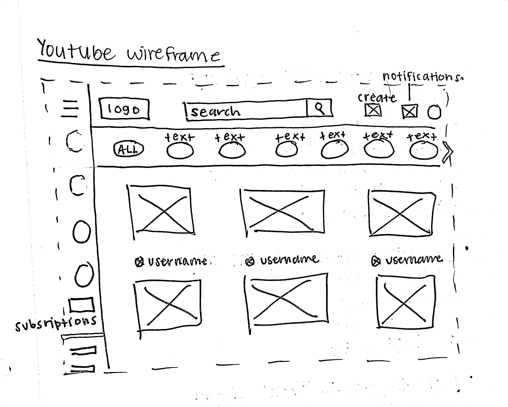
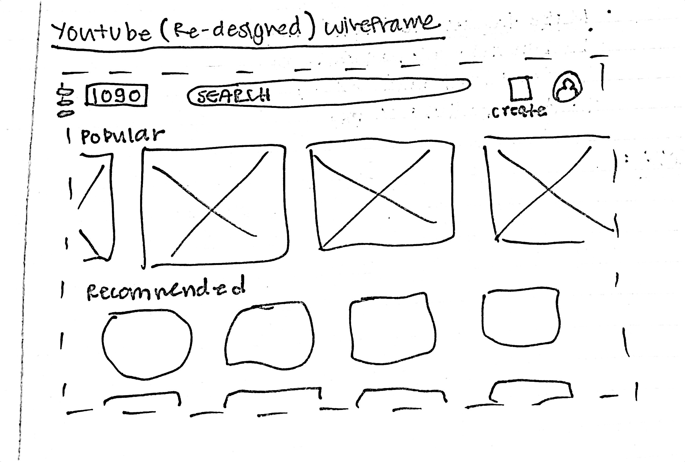

Using the favorite website you chose in homework 1, create a wireframe for one page of it using pen/paper, PowerPoint, or any your tool of choice. (use the 'img' tag!) Make sure to let us know what the name of your website is (Use the 'p' tag!)
YouTube Wireframe
Try to improve the website you've chosen, and create a redesigned wireframe of one page for the same website using the principles of visual hierarchy that you learned from the article.
YouTube Redesigned Wireframe
What is the goal of the website? Who is it intended for? How does the design accomplish this? Write 2-3 sentences answering these questions. (Use the 'p' tag again!)
The goal of the website is to deliver the needs of the user in a efficient and impactful way. For my design, I prioritized user attention and shifted it to the main popular videos when the screen first pops open. I thought the original was too cluttered so I tried to space my elements.
Write 2-3 sentences about what problems your redesign addressed, and how it solved them.
I made my website redesign less cluttered by removing the side buttons and enlarging some of the videos. I also removed the user profile below every video in the original wireframe.